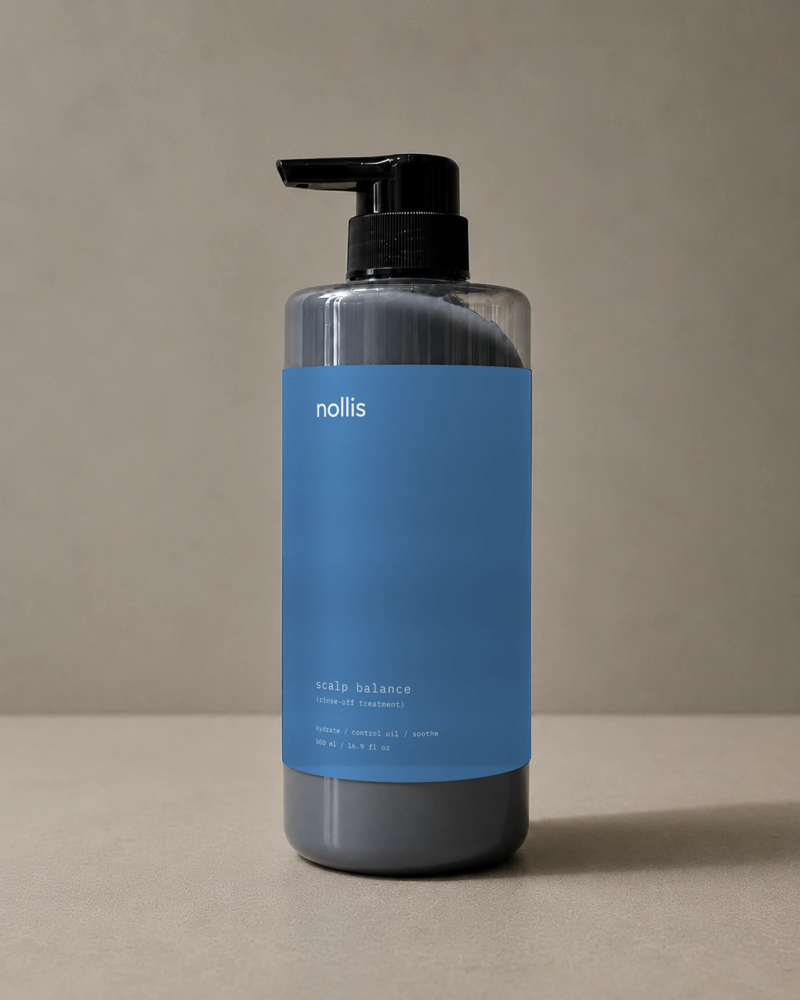
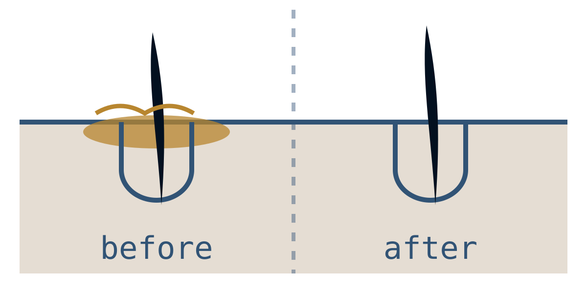
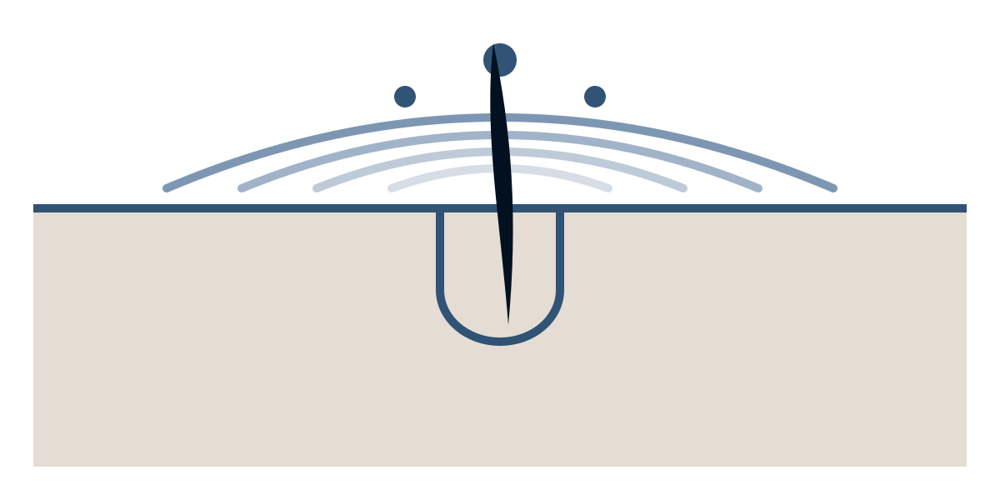
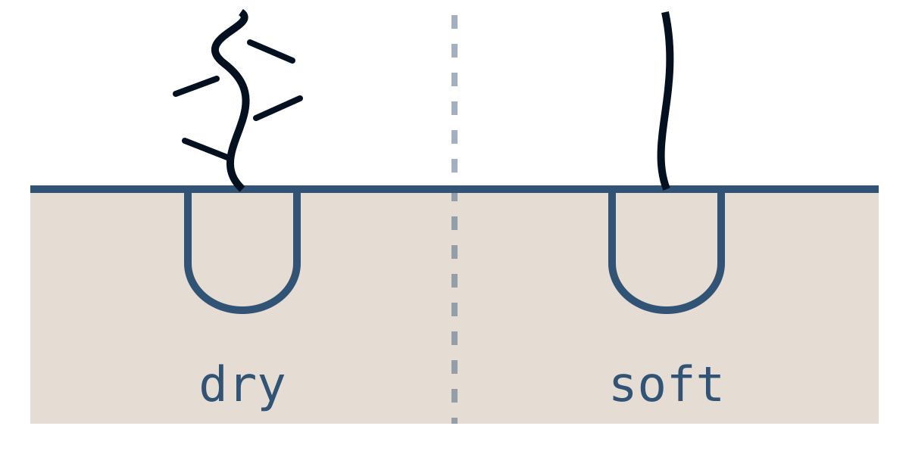
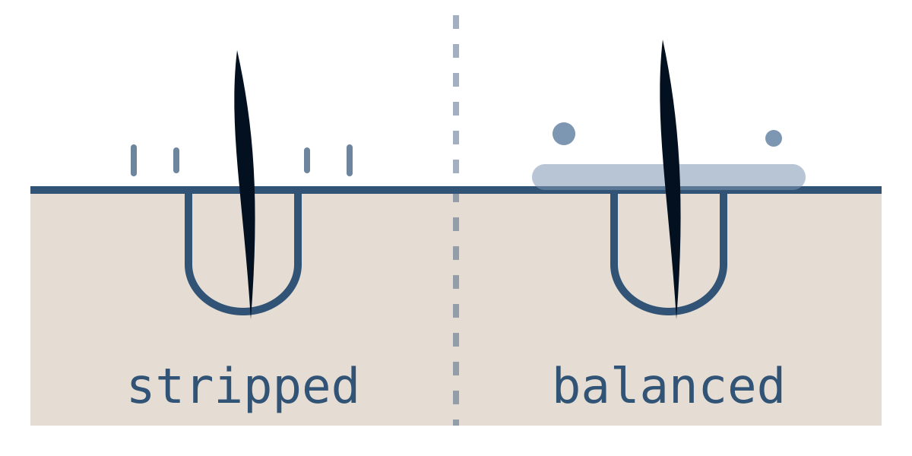
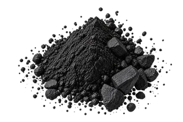
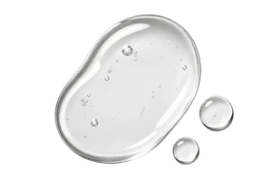
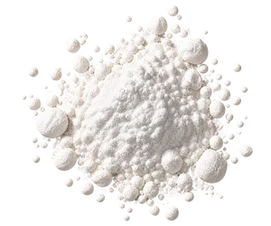

Scalp balance / rinse-off treatment
Good hair days
start at the scalp.
A daily rinse-off treatment for the scalp beneath your hair. It helps lift excess oil while replenishing moisture, leaving your scalp cool, comfortable and your roots fresh.
Around 4 months of daily use

Oily and dry aren't opposites
Oily? Your instinct is to wash more.
But oil at the roots doesn't necessarily mean the scalp beneath is hydrated. Frequent washing can leave it feeling dry or tight.
Dry or itchy? Your instinct is to add oil.
But heavier oils sit on top of the problem. Roots feel weighed down, and the scalp underneath still isn't comfortable.
Scalp Balance works on both at once: it lifts away excess oil and conditions the scalp, without that stripped, squeaky feeling.
01
Hydrate
Panthenol and allantoin help relieve a dry, tight-feeling scalp.
02
Balance oil
Charcoal helps lift excess oil so roots feel fresh for longer.
03
Soothe
A light menthol cooling feel that calms things down after washing.
What balance feels like

Less oil, fresher roots
- Helps lift away excess oil
- Clears everyday build-up
- Keeps roots feeling fresh and light

Calm, cool, comfortable
- Menthol gives an instant cooling sensation
- Allantoin helps soothe the scalp
- Leaves tight, uncomfortable scalps feeling refreshed

Softer, smoother lengths
- Panthenol helps retain moisture
- Wheat protein conditions the hair
- Leaves lengths softer and easier to comb

Balanced, never stripped
- Removes excess oil without over-cleansing
- Replenishes moisture where it's needed
- Leaves the scalp clean, comfortable and balanced
How to use
Three steps,
two minutes
Use it in place of your conditioner, or after it if your lengths need more.
- 01 After shampooing, apply to scalp and hair.
- 02 Massage in and leave for 2–3 minutes.
- 03 Rinse thoroughly.
Ingredients chosen for balance
A considered blend that helps manage excess oil while keeping the scalp moisturized, soothed and refreshed.

Charcoal
Helps absorb excess oil.

Panthenol
Helps moisturize and condition.

Allantoin
Helps soothe the scalp.
Menthol
Leaves a fresh, cooling sensation.
Full ingredient list
What people are saying
Questions
Who is it for?
Anyone with an oily scalp, a dry or itchy scalp, or a scalp that is oily at the roots and dry elsewhere. It suits all hair types.
Why use a treatment on the scalp?
This one is formulated for the scalp rather than the lengths. It lifts excess oil while panthenol and allantoin help the scalp hold on to moisture, and it still leaves hair soft.
Will my roots stay fresh for longer?
That is the idea. By taking away excess oil without stripping the scalp, hair tends to stay light and fuller-feeling between washes.
How often should I use it?
Use daily.